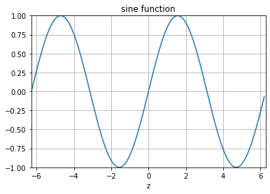
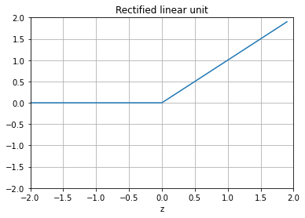
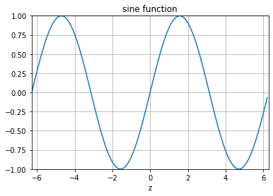
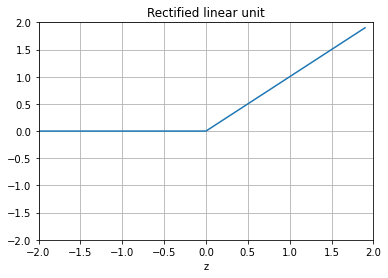

Neural networks
Contents
13. Neural networks¶
Artificial neural networks are computational systems that can learn to perform tasks by considering examples, generally without being programmed with any task-specific rules. It is supposed to mimic a biological system, wherein neurons interact by sending signals in the form of mathematical functions between layers. All layers can contain an arbitrary number of neurons, and each connection is represented by a weight variable.
The field of artificial neural networks has a long history of development, and is closely connected with the advancement of computer science and computers in general. A model of artificial neurons was first developed by McCulloch and Pitts in 1943 to study signal processing in the brain and has later been refined by others. The general idea is to mimic neural networks in the human brain, which is composed of billions of neurons that communicate with each other by sending electrical signals. Each neuron accumulates its incoming signals, which must exceed an activation threshold to yield an output. If the threshold is not overcome, the neuron remains inactive, i.e. has zero output.
This behaviour has inspired a simple mathematical model for an artificial neuron.
Here, the output \(y\) of the neuron is the value of its activation function, which have as input a weighted sum of signals \(x_i, \dots ,x_n\) received by \(n\) other neurons.
Conceptually, it is helpful to divide neural networks into four categories:
general purpose neural networks for supervised learning,
neural networks designed specifically for image processing, the most prominent example of this class being Convolutional Neural Networks (CNNs),
neural networks for sequential data such as Recurrent Neural Networks (RNNs), and
neural networks for unsupervised learning such as Deep Boltzmann Machines.
In natural science, DNNs and CNNs have already found numerous applications. In statistical physics, they have been applied to detect phase transitions in 2D Ising and Potts models, lattice gauge theories, and different phases of polymers, or solving the Navier-Stokes equation in weather forecasting. Deep learning has also found interesting applications in quantum physics. Various quantum phase transitions can be detected and studied using DNNs and CNNs, topological phases, and even non-equilibrium many-body localization. Representing quantum states as DNNs quantum state tomography are among some of the impressive achievements to reveal the potential of DNNs to facilitate the study of quantum systems.
In quantum information theory, it has been shown that one can perform gate decompositions with the help of neural.
The applications are not limited to the natural sciences. There is a plethora of applications in essentially all disciplines, from the humanities to life science and medicine.
An artificial neural network (ANN), is a computational model that consists of layers of connected neurons, or nodes or units. We will refer to these interchangeably as units or nodes, and sometimes as neurons.
It is supposed to mimic a biological nervous system by letting each neuron interact with other neurons by sending signals in the form of mathematical functions between layers. A wide variety of different ANNs have been developed, but most of them consist of an input layer, an output layer and eventual layers in-between, called hidden layers. All layers can contain an arbitrary number of nodes, and each connection between two nodes is associated with a weight variable.
Neural networks (also called neural nets) are neural-inspired nonlinear models for supervised learning. As we will see, neural nets can be viewed as natural, more powerful extensions of supervised learning methods such as linear and logistic regression and soft-max methods we discussed earlier.
13.1. Feed-forward neural networks¶
The feed-forward neural network (FFNN) was the first and simplest type of ANNs that were devised. In this network, the information moves in only one direction: forward through the layers.
Nodes are represented by circles, while the arrows display the connections between the nodes, including the direction of information flow. Additionally, each arrow corresponds to a weight variable (figure to come). We observe that each node in a layer is connected to all nodes in the subsequent layer, making this a so-called fully-connected FFNN.
13.2. Convolutional Neural Network¶
A different variant of FFNNs are convolutional neural networks (CNNs), which have a connectivity pattern inspired by the animal visual cortex. Individual neurons in the visual cortex only respond to stimuli from small sub-regions of the visual field, called a receptive field. This makes the neurons well-suited to exploit the strong spatially local correlation present in natural images. The response of each neuron can be approximated mathematically as a convolution operation. (figure to come)
Convolutional neural networks emulate the behaviour of neurons in the visual cortex by enforcing a local connectivity pattern between nodes of adjacent layers: Each node in a convolutional layer is connected only to a subset of the nodes in the previous layer, in contrast to the fully-connected FFNN. Often, CNNs consist of several convolutional layers that learn local features of the input, with a fully-connected layer at the end, which gathers all the local data and produces the outputs. They have wide applications in image and video recognition.
13.3. Recurrent neural networks¶
So far we have only mentioned ANNs where information flows in one direction: forward. Recurrent neural networks on the other hand, have connections between nodes that form directed cycles. This creates a form of internal memory which are able to capture information on what has been calculated before; the output is dependent on the previous computations. Recurrent NNs make use of sequential information by performing the same task for every element in a sequence, where each element depends on previous elements. An example of such information is sentences, making recurrent NNs especially well-suited for handwriting and speech recognition.
13.4. Other types of networks¶
There are many other kinds of ANNs that have been developed. One type that is specifically designed for interpolation in multidimensional space is the radial basis function (RBF) network. RBFs are typically made up of three layers: an input layer, a hidden layer with non-linear radial symmetric activation functions and a linear output layer (‘’linear’’ here means that each node in the output layer has a linear activation function). The layers are normally fully-connected and there are no cycles, thus RBFs can be viewed as a type of fully-connected FFNN. They are however usually treated as a separate type of NN due the unusual activation functions.
13.5. Multilayer perceptrons¶
One uses often so-called fully-connected feed-forward neural networks with three or more layers (an input layer, one or more hidden layers and an output layer) consisting of neurons that have non-linear activation functions.
Such networks are often called multilayer perceptrons (MLPs).
According to the Universal approximation theorem, a feed-forward neural network with just a single hidden layer containing a finite number of neurons can approximate a continuous multidimensional function to arbitrary accuracy, assuming the activation function for the hidden layer is a non-constant, bounded and monotonically-increasing continuous function.
Note that the requirements on the activation function only applies to the hidden layer, the output nodes are always assumed to be linear, so as to not restrict the range of output values.
The output \(y\) is produced via the activation function \(f\)
This function receives \(x_i\) as inputs. Here the activation \(z=(\sum_{i=1}^n w_ix_i+b_i)\). In an FFNN of such neurons, the inputs \(x_i\) are the outputs of the neurons in the preceding layer. Furthermore, an MLP is fully-connected, which means that each neuron receives a weighted sum of the outputs of all neurons in the previous layer.
First, for each node \(i\) in the first hidden layer, we calculate a weighted sum \(z_i^1\) of the input coordinates \(x_j\),
Here \(b_i\) is the so-called bias which is normally needed in case of zero activation weights or inputs. How to fix the biases and the weights will be discussed below. The value of \(z_i^1\) is the argument to the activation function \(f_i\) of each node \(i\), The variable \(M\) stands for all possible inputs to a given node \(i\) in the first layer. We define the output \(y_i^1\) of all neurons in layer 1 as
where we assume that all nodes in the same layer have identical activation functions, hence the notation \(f\). In general, we could assume in the more general case that different layers have different activation functions. In this case we would identify these functions with a superscript \(l\) for the \(l\)-th layer,
where \(N_l\) is the number of nodes in layer \(l\). When the output of all the nodes in the first hidden layer are computed, the values of the subsequent layer can be calculated and so forth until the output is obtained.
The output of neuron \(i\) in layer 2 is thus,
where we have substituted \(y_k^1\) with the inputs \(x_k\). Finally, the ANN output reads
We can generalize this expression to an MLP with \(l\) hidden layers. The complete functional form is,
which illustrates a basic property of MLPs: The only independent variables are the input values \(x_n\).
This confirms that an MLP, despite its quite convoluted mathematical form, is nothing more than an analytic function, specifically a mapping of real-valued vectors \(\hat{x} \in \mathbb{R}^n \rightarrow \hat{y} \in \mathbb{R}^m\).
Furthermore, the flexibility and universality of an MLP can be illustrated by realizing that the expression is essentially a nested sum of scaled activation functions of the form
where the parameters \(c_i\) are weights and biases. By adjusting these parameters, the activation functions can be shifted up and down or left and right, change slope or be rescaled which is the key to the flexibility of a neural network.
We can introduce a more convenient notation for the activations in an A NN.
Additionally, we can represent the biases and activations as layer-wise column vectors \(\hat{b}_l\) and \(\hat{y}_l\), so that the \(i\)-th element of each vector is the bias \(b_i^l\) and activation \(y_i^l\) of node \(i\) in layer \(l\) respectively.
We have that \(\mathrm{W}_l\) is an \(N_{l-1} \times N_l\) matrix, while \(\hat{b}_l\) and \(\hat{y}_l\) are \(N_l \times 1\) column vectors. With this notation, the sum becomes a matrix-vector multiplication, and we can write the equation for the activations of hidden layer 2 (assuming three nodes for simplicity) as
13.5.1. Matrix-vector notation and activation¶
The activation of node \(i\) in layer 2 is
This is not just a convenient and compact notation, but also a useful and intuitive way to think about MLPs: The output is calculated by a series of matrix-vector multiplications and vector additions that are used as input to the activation functions. For each operation \(\mathrm{W}_l \hat{y}_{l-1}\) we move forward one layer.
13.5.2. Activation functions¶
A property that characterizes a neural network, other than its connectivity, is the choice of activation function(s). As described in, the following restrictions are imposed on an activation function for a FFNN to fulfill the universal approximation theorem
Non-constant
Bounded
Monotonically-increasing
Continuous
The second requirement excludes all linear functions. Furthermore, in a MLP with only linear activation functions, each layer simply performs a linear transformation of its inputs.
Regardless of the number of layers, the output of the NN will be nothing but a linear function of the inputs. Thus we need to introduce some kind of non-linearity to the NN to be able to fit non-linear functions Typical examples are the logistic Sigmoid
and the hyperbolic tangent function
The sigmoid function are more biologically plausible because the output of inactive neurons are zero. Such activation function are called one-sided. However, it has been shown that the hyperbolic tangent performs better than the sigmoid for training MLPs. has become the most popular for deep neural networks
%matplotlib inline
"""The sigmoid function (or the logistic curve) is a
function that takes any real number, z, and outputs a number (0,1).
It is useful in neural networks for assigning weights on a relative scale.
The value z is the weighted sum of parameters involved in the learning algorithm."""
import numpy
import matplotlib.pyplot as plt
import math as mt
z = numpy.arange(-5, 5, .1)
sigma_fn = numpy.vectorize(lambda z: 1/(1+numpy.exp(-z)))
sigma = sigma_fn(z)
fig = plt.figure()
ax = fig.add_subplot(111)
ax.plot(z, sigma)
ax.set_ylim([-0.1, 1.1])
ax.set_xlim([-5,5])
ax.grid(True)
ax.set_xlabel('z')
ax.set_title('sigmoid function')
plt.show()
"""Step Function"""
z = numpy.arange(-5, 5, .02)
step_fn = numpy.vectorize(lambda z: 1.0 if z >= 0.0 else 0.0)
step = step_fn(z)
fig = plt.figure()
ax = fig.add_subplot(111)
ax.plot(z, step)
ax.set_ylim([-0.5, 1.5])
ax.set_xlim([-5,5])
ax.grid(True)
ax.set_xlabel('z')
ax.set_title('step function')
plt.show()
"""Sine Function"""
z = numpy.arange(-2*mt.pi, 2*mt.pi, 0.1)
t = numpy.sin(z)
fig = plt.figure()
ax = fig.add_subplot(111)
ax.plot(z, t)
ax.set_ylim([-1.0, 1.0])
ax.set_xlim([-2*mt.pi,2*mt.pi])
ax.grid(True)
ax.set_xlabel('z')
ax.set_title('sine function')
plt.show()
"""Plots a graph of the squashing function used by a rectified linear
unit"""
z = numpy.arange(-2, 2, .1)
zero = numpy.zeros(len(z))
y = numpy.max([zero, z], axis=0)
fig = plt.figure()
ax = fig.add_subplot(111)
ax.plot(z, y)
ax.set_ylim([-2.0, 2.0])
ax.set_xlim([-2.0, 2.0])
ax.grid(True)
ax.set_xlabel('z')
ax.set_title('Rectified linear unit')
plt.show()

 



13.6. The multilayer perceptron (MLP)¶
The multilayer perceptron is a very popular, and easy to implement approach, to deep learning. It consists of
A neural network with one or more layers of nodes between the input and the output nodes.
The multilayer network structure, or architecture, or topology, consists of an input layer, one or more hidden layers, and one output layer.
The input nodes pass values to the first hidden layer, its nodes pass the information on to the second and so on till we reach the output layer.
As a convention it is normal to call a network with one layer of input units, one layer of hidden units and one layer of output units as a two-layer network. A network with two layers of hidden units is called a three-layer network etc etc.
For an MLP network there is no direct connection between the output nodes/neurons/units and the input nodes/neurons/units. Hereafter we will call the various entities of a layer for nodes. There are also no connections within a single layer.
The number of input nodes does not need to equal the number of output nodes. This applies also to the hidden layers. Each layer may have its own number of nodes and activation functions.
The hidden layers have their name from the fact that they are not linked to observables and as we will see below when we define the so-called activation \(\hat{z}\), we can think of this as a basis expansion of the original inputs \(\hat{x}\). The difference however between neural networks and say linear regression is that now these basis functions (which will correspond to the weights in the network) are learned from data. This results in an important difference between neural networks and deep learning approaches on one side and methods like logistic regression or linear regression and their modifications on the other side.
13.6.1. From one to many layers, the universal approximation theorem¶
A neural network with only one layer, what we called the simple perceptron, is best suited if we have a standard binary model with clear (linear) boundaries between the outcomes. As such it could equally well be replaced by standard linear regression or logistic regression. Networks with one or more hidden layers approximate systems with more complex boundaries.
As stated earlier, an important theorem in studies of neural networks, restated without proof here, is the universal approximation theorem.
It states that a feed-forward network with a single hidden layer containing a finite number of neurons can approximate continuous functions on compact subsets of real functions. The theorem thus states that simple neural networks can represent a wide variety of interesting functions when given appropriate parameters. It is the multilayer feedforward architecture itself which gives neural networks the potential of being universal approximators.
13.7. Deriving the back propagation code for a multilayer perceptron model¶
As we have seen now in a feed forward network, we can express the final output of our network in terms of basic matrix-vector multiplications. The unknowwn quantities are our weights \(w_{ij}\) and we need to find an algorithm for changing them so that our errors are as small as possible. This leads us to the famous back propagation algorithm.
The questions we want to ask are how do changes in the biases and the weights in our network change the cost function and how can we use the final output to modify the weights?
To derive these equations let us start with a plain regression problem and define our cost function as
where the \(t_i\)s are our \(n\) targets (the values we want to reproduce), while the outputs of the network after having propagated all inputs \(\hat{x}\) are given by \(y_i\). Below we will demonstrate how the basic equations arising from the back propagation algorithm can be modified in order to study classification problems with \(K\) classes.
With our definition of the targets \(\hat{t}\), the outputs of the network \(\hat{y}\) and the inputs \(\hat{x}\) we define now the activation \(z_j^l\) of node/neuron/unit \(j\) of the \(l\)-th layer as a function of the bias, the weights which add up from the previous layer \(l-1\) and the forward passes/outputs \(\hat{a}^{l-1}\) from the previous layer as
where \(b_k^l\) are the biases from layer \(l\). Here \(M_{l-1}\) represents the total number of nodes/neurons/units of layer \(l-1\). The figure here illustrates this equation. We can rewrite this in a more compact form as the matrix-vector products we discussed earlier,
With the activation values \(\hat{z}^l\) we can in turn define the output of layer \(l\) as \(\hat{a}^l = f(\hat{z}^l)\) where \(f\) is our activation function. In the examples here we will use the sigmoid function discussed in our logistic regression lectures. We will also use the same activation function \(f\) for all layers and their nodes. It means we have
13.7.1. Derivatives and the chain rule¶
From the definition of the activation \(z_j^l\) we have
and
With our definition of the activation function we have that (note that this function depends only on \(z_j^l\))
With these definitions we can now compute the derivative of the cost function in terms of the weights.
Let us specialize to the output layer \(l=L\). Our cost function is
The derivative of this function with respect to the weights is
The last partial derivative can easily be computed and reads (by applying the chain rule)
13.7.2. Bringing it together, first back propagation equation¶
We have thus
Defining
and using the Hadamard product of two vectors we can write this as
This is an important expression. The second term on the right handside measures how fast the cost function is changing as a function of the \(j\)th output activation. If, for example, the cost function doesn’t depend much on a particular output node \(j\), then \(\delta_j^L\) will be small, which is what we would expect. The first term on the right, measures how fast the activation function \(f\) is changing at a given activation value \(z_j^L\).
Notice that everything in the above equations is easily computed. In particular, we compute \(z_j^L\) while computing the behaviour of the network, and it is only a small additional overhead to compute \(f'(z^L_j)\). The exact form of the derivative with respect to the output depends on the form of the cost function. However, provided the cost function is known there should be little trouble in calculating
With the definition of \(\delta_j^L\) we have a more compact definition of the derivative of the cost function in terms of the weights, namely
It is also easy to see that our previous equation can be written as
which can also be interpreted as the partial derivative of the cost function with respect to the biases \(b_j^L\), namely
That is, the error \(\delta_j^L\) is exactly equal to the rate of change of the cost function as a function of the bias.
We have now three equations that are essential for the computations of the derivatives of the cost function at the output layer. These equations are needed to start the algorithm and they are
The starting equations.
and
and
An interesting consequence of the above equations is that when the activation \(a_k^{L-1}\) is small, the gradient term, that is the derivative of the cost function with respect to the weights, will also tend to be small. We say then that the weight learns slowly, meaning that it changes slowly when we minimize the weights via say gradient descent. In this case we say the system learns slowly.
Another interesting feature is that is when the activation function, represented by the sigmoid function here, is rather flat when we move towards its end values \(0\) and \(1\) (see the above Python codes). In these cases, the derivatives of the activation function will also be close to zero, meaning again that the gradients will be small and the network learns slowly again.
We need a fourth equation and we are set. We are going to propagate backwards in order to the determine the weights and biases. In order to do so we need to represent the error in the layer before the final one \(L-1\) in terms of the errors in the final output layer.
13.7.3. Final back propagating equation¶
We have that (replacing \(L\) with a general layer \(l\))
We want to express this in terms of the equations for layer \(l+1\). Using the chain rule and summing over all \(k\) entries we have
and recalling that
with \(M_l\) being the number of nodes in layer \(l\), we obtain
This is our final equation.
We are now ready to set up the algorithm for back propagation and learning the weights and biases.
13.7.4. Setting up the Back propagation algorithm¶
The four equations provide us with a way of computing the gradient of the cost function. Let us write this out in the form of an algorithm.
First, we set up the input data \(\hat{x}\) and the activations \(\hat{z}_1\) of the input layer and compute the activation function and the pertinent outputs \(\hat{a}^1\).
Secondly, we perform then the feed forward till we reach the output layer and compute all \(\hat{z}_l\) of the input layer and compute the activation function and the pertinent outputs \(\hat{a}^l\) for \(l=2,3,\dots,L\).
Thereafter we compute the ouput error \(\hat{\delta}^L\) by computing all
Then we compute the back propagate error for each \(l=L-1,L-2,\dots,2\) as
Finally, we update the weights and the biases using gradient descent for each \(l=L-1,L-2,\dots,2\) and update the weights and biases according to the rules
The parameter \(\eta\) is the learning parameter discussed in connection with the gradient descent methods. Here it is convenient to use stochastic gradient descent (see the examples below) with mini-batches with an outer loop that steps through multiple epochs of training.